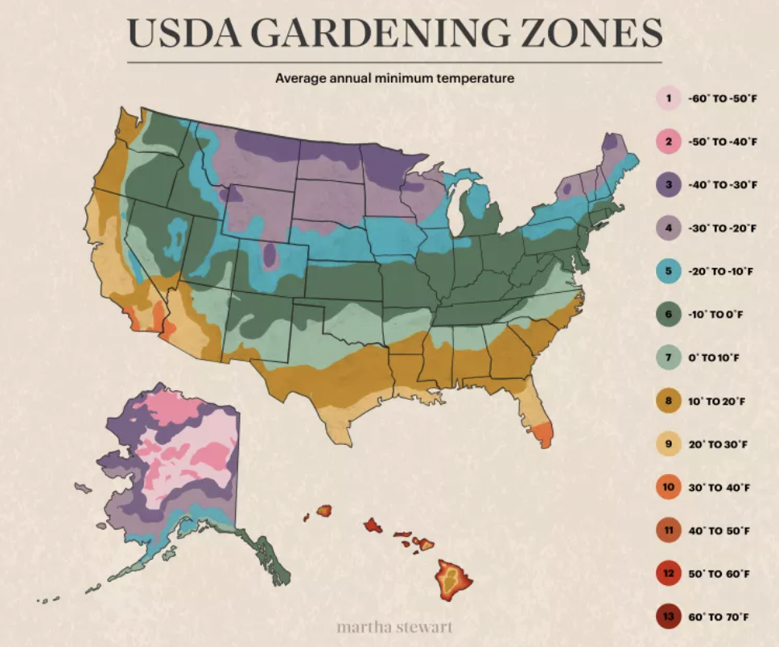

In the U.S., gardening success starts with understanding your hardiness zone—a system that divides the country into regions based on average minimum temperatures. By knowing your zone, you can plan which plants will thrive best in your area!
Understanding your gardening zone isn't just about planting, it’s about ensuring long-term success in your garden!
By aligning your plant choices with your zone's climate, you can avoid disappointment and wasted time.
Timing is everything. Zones help you know when to plant and when to expect frost, which is crucial for certain crops.
Imagine spending weeks nurturing your plants, only for a surprise frost to ruin all your hard work!
Better growth, less guesswork. With the right zone knowledge, you can select plants that will not only survive but thrive, creating a flourishing garden that lasts.
Understanding these zones means you’re gardening smarter, not harder!